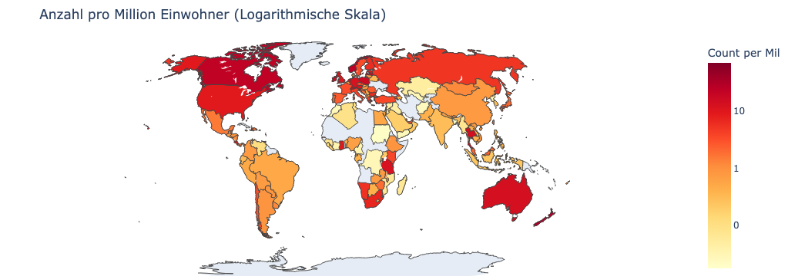
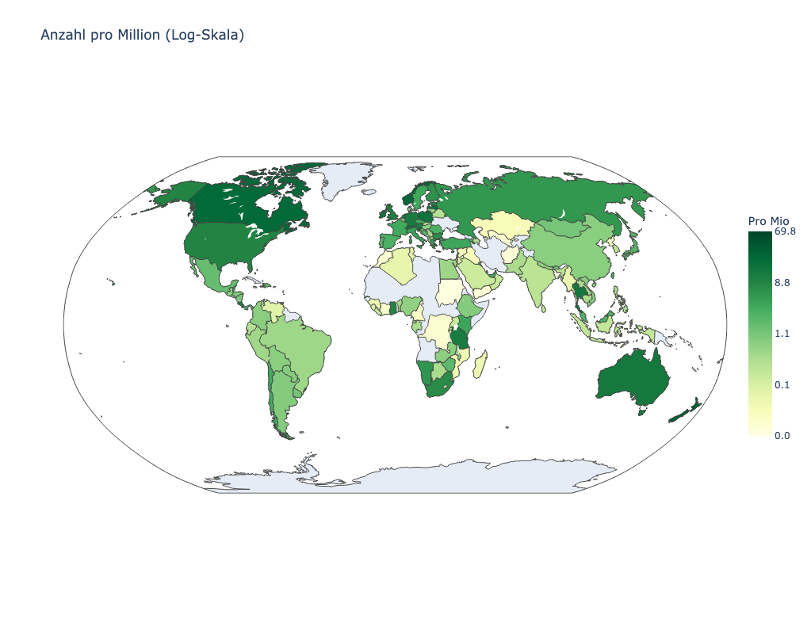

Index(['Country ', 'Breitengrad (generiert)', 'Längengrad (generiert)',
'Count'],
dtype='object')Montessori Census 2022
WARNING: The directory '/home/jovyan/.cache/pip' or its parent directory is not owned or is not writable by the current user. The cache has been disabled. Check the permissions and owner of that directory. If executing pip with sudo, you should use sudo's -H flag. Requirement already satisfied: wbgapi in /opt/conda/lib/python3.13/site-packages (1.0.14) Requirement already satisfied: country-converter in /opt/conda/lib/python3.13/site-packages (1.3.2) Requirement already satisfied: requests in /opt/conda/lib/python3.13/site-packages (from wbgapi) (2.32.5) Requirement already satisfied: PyYAML in /opt/conda/lib/python3.13/site-packages (from wbgapi) (6.0.3) Requirement already satisfied: tabulate in /opt/conda/lib/python3.13/site-packages (from wbgapi) (0.9.0) Requirement already satisfied: pandas>=1.0 in /opt/conda/lib/python3.13/site-packages (from country-converter) (2.3.3) Requirement already satisfied: numpy>=1.26.0 in /opt/conda/lib/python3.13/site-packages (from pandas>=1.0->country-converter) (2.3.5) Requirement already satisfied: python-dateutil>=2.8.2 in /opt/conda/lib/python3.13/site-packages (from pandas>=1.0->country-converter) (2.9.0.post0) Requirement already satisfied: pytz>=2020.1 in /opt/conda/lib/python3.13/site-packages (from pandas>=1.0->country-converter) (2025.2) Requirement already satisfied: tzdata>=2022.7 in /opt/conda/lib/python3.13/site-packages (from pandas>=1.0->country-converter) (2025.3) Requirement already satisfied: six>=1.5 in /opt/conda/lib/python3.13/site-packages (from python-dateutil>=2.8.2->pandas>=1.0->country-converter) (1.17.0) Requirement already satisfied: charset_normalizer<4,>=2 in /opt/conda/lib/python3.13/site-packages (from requests->wbgapi) (3.4.4) Requirement already satisfied: idna<4,>=2.5 in /opt/conda/lib/python3.13/site-packages (from requests->wbgapi) (3.11) Requirement already satisfied: urllib3<3,>=1.21.1 in /opt/conda/lib/python3.13/site-packages (from requests->wbgapi) (2.6.2) Requirement already satisfied: certifi>=2017.4.17 in /opt/conda/lib/python3.13/site-packages (from requests->wbgapi) (2025.11.12)
Fetching data from World Bank...
Converting country names to ISO3...
⚠️ Warning: No population data found for: ['Taiwan' 'Martinique']| Country | Breitengrad (generiert) | Längengrad (generiert) | Count | Country_Clean | ISO3 | Population_2022 | |
|---|---|---|---|---|---|---|---|
| 0 | Zimbabwe | -19,098 | 30,047 | 30 | Zimbabwe | ZWE | 16069056.0 |
| 1 | Zambia | -15,13 | 25,268 | 15 | Zambia | ZMB | 20152938.0 |
| 2 | Yemen | 15,569 | 47,793 | 1 | Yemen | YEM | 38222876.0 |
| 3 | Virgin Islands (British) | 18,4204 | -64,64 | 1 | Virgin Islands (British) | VGB | 38319.0 |
| 4 | Viet Nam | 21,75 | 105,373 | 80 | Viet Nam | VNM | 99680655.0 |
Noch fehlend: []| Country | Breitengrad (generiert) | Längengrad (generiert) | Count | Country_Clean | ISO3 | Population_2022 | |
|---|---|---|---|---|---|---|---|
| 149 | Antigua and Barbuda | 17,625 | -61,786 | 1 | Antigua and Barbuda | ATG | 92840.0 |
| 150 | American Samoa | -14,3018 | -170,7511 | 2 | American Samoa | ASM | 48342.0 |
| 151 | Algeria | 28,6045 | 2,64 | 4 | Algeria | DZA | 45477389.0 |
| 152 | Albania | 40,654 | 20,076 | 2 | Albania | ALB | 2451636.0 |
| 153 | Afghanistan | 34,023 | 65,5267 | 1 | Afghanistan | AFG | 40578842.0 |
| Country | Breitengrad (generiert) | Längengrad (generiert) | Count | Country_Clean | ISO3 | Population_2022 | Count_Per_Mil | |
|---|---|---|---|---|---|---|---|---|
| 149 | Antigua and Barbuda | 17,625 | -61,786 | 1 | Antigua and Barbuda | ATG | 92840.0 | 10.771219 |
| 150 | American Samoa | -14,3018 | -170,7511 | 2 | American Samoa | ASM | 48342.0 | 41.371892 |
| 151 | Algeria | 28,6045 | 2,64 | 4 | Algeria | DZA | 45477389.0 | 0.087956 |
| 152 | Albania | 40,654 | 20,076 | 2 | Albania | ALB | 2451636.0 | 0.815782 |
| 153 | Afghanistan | 34,023 | 65,5267 | 1 | Afghanistan | AFG | 40578842.0 | 0.024643 |


| Country_Clean | Count_Per_Mil | Population_2022 | Count |
|---|---|---|---|
| New Zealand | 33.26 | 5081700.0 | 169 |
| Luxembourg | 27.56 | 653103.0 | 18 |
| Norway | 23.82 | 5457127.0 | 130 |
| Canada | 23.11 | 38935934.0 | 900 |
| Latvia | 17.03 | 1879383.0 | 32 |
| Slovenia | 16.57 | 2112076.0 | 35 |
| Poland | 16.29 | 36821749.0 | 600 |
| Ireland | 15.54 | 5212836.0 | 81 |
| Thailand | 13.94 | 71735329.0 | 1000 |
| Switzerland | 13.67 | 8777088.0 | 120 |
| Australia | 13.26 | 26018721.0 | 345 |
| Netherlands | 12.60 | 17700982.0 | 223 |
| Tanzania, United Republic of | 12.36 | 64711821.0 | 800 |
| Germany | 12.02 | 83177813.0 | 1000 |
| Austria | 11.72 | 9041851.0 | 106 |
| Singapore | 11.18 | 5637022.0 | 63 |
| United Kingdom of Great Britain and Northern Ireland | 10.35 | 67604000.0 | 700 |
| United States of America | 9.06 | 334017321.0 | 3025 |
| Costa Rica | 9.05 | 5081765.0 | 46 |
| Ghana | 9.05 | 33149152.0 | 300 |